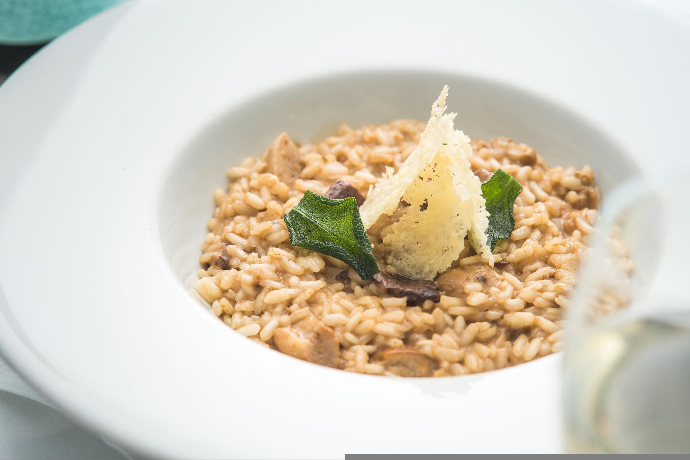

Back to recipes index
Risotto with Truffle and Parmesan

Description
A creamy and savory risotto recipe that goes well with many kinds of protein.
Ingredients
- 1 quart chicken broth
- 1 tablespoon butter
- 1 tablespoon olive oil
- 1/2 onion, minced
- 1 1/4 cups Arborio rice
- 1/2 cup white wine
- 2 tablespoons butter
- 2 tablespoons white truffle oil
- 1/3 cp grated Parmesan cheese
- 1 teaspoon milk, or as needed
- salt and ground black pepper to taste
- 2 tablespoons chopped fresh parsley, or to taste
Steps
- Heat chicken broth in a stockpot over medium-low heat until warmed.
- Heat 1 tablespoon butter and olive oil in a large, heavy-bottomed pan; cook and stir onion in the melted butter-oil mixture until translucent, about 2 minutes.
- Add rice to onion mixture and stir to coat; cook and stir rice mixture until fragrant, about 1 minute.
- Pour wine into rice mixture; cook and stir until liquid is absorbed, about 5 minutes.
- Add 1 ladle of hot chicken broth to rice mixture, stirring constantly, until broth is absorbed. Continue adding 1 ladle of broth at a time until rice is tender but firm to the bite, 20 to 30 minutes.
- Mix 2 tablespoons butter, truffle oil, Parmesan cheese, and milk into risotto until fully incorporated; season with salt, pepper, and parsley.
Back to recipes index